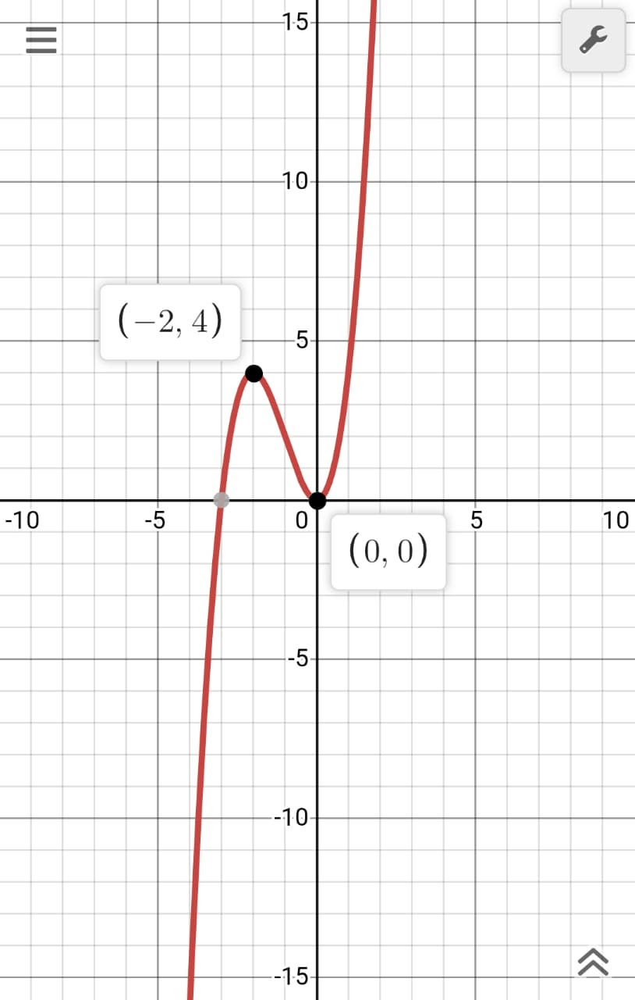

Définition: Un extremum est une valeur extrême \(y_{0}= f(x_{0})\) qui peut correspondre à un minimum ou à un maximum prise par une valeur \(x_{0}\) sure un intervalle donné.
Pour exprimer que la fonction \(f\) admet en \(x_{0}\) un maximum ou un minimum, on dit que \(f\) admet en \(x_{0}\) un extremum.
On dit qu’une fonction \(f\) admet en un point \(x_{0}\) , de son ensemble de définition \(D\)\(f\) un extremum local s’il existe un intervalle ouvert \(I\) inclus dans \(D\)\(f\), contenant \(x_{0}\) , et tel que \(f\) admet un extremum en \(x_{0}\) .
Explications :
Un extremum est appelé un Minimum quand la sens de variation juste avant l’extremum est décroissant et juste après il est croissant.
Un maximum est quand la sens de variation juste avant l’extremum est croissante et juste après il est décroissant.
Diagrames:
Une fonction peut avoir plusieurs Extremums.
\(f(x) = x^3+3x^2\)

On admet que le point \((-2 ; 4)\) est le maximum et le point \((0 ; 0)\) est le
minimum de la fonction \(f(x) = x^3+3x^2\)
Maximum et minimum [ de 0:59 jusqu’à 1:55]:
Maximum et minimum [ de 0:11 jusqu’à 2:16]: